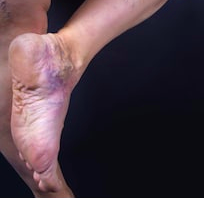
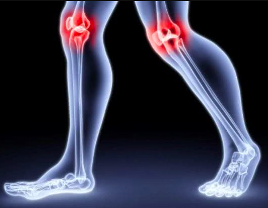

Hipertensión, varices, diabetes, osteocondrosis y otras enfermedades "crónicas": una historia contada por médicos por la que hay que pagar. Cómo limpiar los vasos para que estas enfermedades "incurables" desaparezcan para siempre.


Accidente cerebrovascular y ataque cardíaco. Estas palabras asustan a muchos, porque es la causa de una de cada seis muertes en Europa. Ocurren debido a vasos obstruidos. Y por la misma razón, la cabeza puede empezar a doler, la vista empeora, el sueño empeora y las rodillas duelen. Sí, es por el colesterol en los vasos sanguíneos. ¿Envejecer? ¿No se puede hacer nada al respecto? Pero esto no es cierto.
- ¿Qué otras enfermedades ocurren porque la sangre no fluye con la fuerza necesaria a los órganos?
- ¿Cuáles son las señales de que sus vasos están "cansados"?
- Es acaso difícil limpiar los vasos sanguíneos en casa?
Para entender la pregunta y encontrar respuestas definitivas, recurrimos a una conocida Dra. Beatriz García. Amablemente accedió a conceder la entrevista, que le informamos.
¿Por qué 9 de cada 10 pacientes se enferman a causa de los vasos sanguíneos?
La Dr. Beatriz, les dice a sus pacientes que los vasos sanguíneos son el 90% de la salud corporal de una persona. ¿Por qué es así?
A menudo se dice que el órgano humano más grande es la piel. Eso no es así. El sistema vascular es el más grande de nuestro cuerpo. Es natural que las enfermedades se le relacionen con mayor frecuencia.
5 años
son necesarios para conducir una distancia igual a la de todos los vasos de 1 persona en un horario de conducción normal en un automóvil.
Hay alrededor de 150 mil millones de capilares en su cuerpo. Si crea un modelo de capilares a partir de fósforos, pesará el equivalente a 8 boings. Y si calcula la longitud de los vasos en el cuerpo, obtiene 65 000 millas.
A continuación se muestra un ejemplo comparativo. En promedio, el automóvil recorre 65 000 millas en 4-5 años. Si se creara un "hilo" con los vasos sanguíneos y conduce desde su inicio a principios de 2020, verá su final en 2025.
¿Impresionante escala?
Un sistema tan grande no puede ser simple. Y tiene muchas opciones para diferentes tipos de enfermedades que puede contraer.
Aquí hay solo 6 de los problemas más peligrosos y frecuentes, cuya causa son los vasos obstruidos.
Veamos su clasificación en orden de aumento del riesgo de enfermedad.
- Venas varicosas - el resultado de vasos obstruidos en las piernas. Dolor horrible, calambres, heridas que no cicatrizan. Las piernas se cansan después de 20 minutos de caminata. Los hongos en los dedos y las grietas en los pies, por cierto, también surgen debido a un suministro de sangre insuficiente.
- Duele ir al baño y simplemente sentarse - porque los vasos del recto se han debilitado y le han provocado hemorroides.
- Articulaciones adoloridas - el resultado del secado del cartílago y los oligoelementos no entran en las articulaciones. El dolor en las rodillas, los dedos y las articulaciones de la cadera comienza debido a un riego sanguíneo deficiente.
- Problemas de hígado - el resultado del hecho de que la sangre aporta pocos nutrientes y comienza el proceso degenerativo - hepatosis. Sabor amargo frecuente en la boca y eructos - síntomas muy característicos.
- La visión empeora y mareos. - cuando los vasos de la cabeza se debilitan, no solo se desarrollan cataratas, sino que también el cerebro se vuelve vulnerable. La memoria empeora cada día y la inteligencia también empeora.
- Y en la parte superior de la lista - hipertensión. La misma enfermedad que provoca accidentes cerebrovasculares y ataques cardíacos.
Los vasos son el sistema de transporte de todos los nutrientes en el cuerpo de una persona. Debido a los vasos sanguíneos en mal estado, todo el cuerpo sufre. Cada órgano sin excepciones.
Aquellos que quieren adelgazar, ahora también te interesará. Para moderar su apetito, necesita limpiar sus vasos sanguíneos de colesterol. Se deposita en los vasos que bloquean el paso de los nutrientes a los órganos internos, y el cerebro percibe este hambre como una señal "¡dale comida!".
Pero en realidad comiste más de lo necesario. De ahí la grasa y los pliegues. Limpia los vasos: los kilos de más irán acompañados del deseo de comer en exceso.
Una vez más repetiré: los vasos sanguíneos son el 90% de tu salud. Límpielos, tonifíquelos, y luego desaparecerán casi todas las enfermedades crónicas e “incurables”.
¿Qué es innecesario en nuestras vasos?
A veces hay tantos depósitos en las paredes que ya no es posible distinguir dónde está el tejido del propio vaso. ¿El colesterol por sí solo obstruye el sistema circulatorio?
8% de tu peso
una gran cantidad de depósitos a la edad de 50 años se acumulan en los vasos sanguíneos: 14-20 lb.
Si la luz normal de los vasos fuera del tamaño de la muñeca, entonces con la edad su tamaño disminuiría al diámetro de un dedo.
Colesterol
- La parte principal que obstruye los vasos sanguíneos: el colesterol. Es una sustancia parecida a la grasa que ingresa a los vasos de dos formas diferentes. Aproximadamente una cuarta parte del colesterol que recibimos de los alimentos que comemos, y las tres cuartas partes restantes son producidas por el propio cuerpo.
- La luz vascular se reduce a 4-5 veces en 50 años. Las placas de colesterol provocan dolores de cabeza, problemas en las articulaciones, presión arterial alta y problemas de salud constantes. Pero los trombos sanguíneos y las masas de trombos representan una amenaza real para la vida.
Trombo
- Trombo: un coágulo de sangre blando. Una masa de trombo es la acumulación de coágulos de sangre en un lugar o incluso a lo largo de toda la vena. Estas masas son secas y densas. Acumulan alrededor de un kilogramo. El peligro no está en el número, sino en el hecho de que son inestables. Pueden desprenderse en cualquier momento y tener consecuencias terribles.
- Si un coágulo de sangre bloquea un vaso en su cerebro, ocurre un derrame cerebral, si bloquea la arteria del corazón, es un ataque al corazón.
- Cualquier otro órgano también puede quedar sin suministro de sangre, y luego los pulmones pueden colapsar, insuficiencia renal, gangrena y muchos otros desastres de salud.
Depósitos de calcio
- ¿Sabes cómo llega el calcio a los vasos sanguíneos? Estos son los restos de tabletas y aditivos alimentarios. Durante toda la vida de una persona, se acumulan alrededor de 1,1 lb en su cuerpo. Sobre todo, el cerebro sufre de calcio.
- El calcio es una sustancia dura con bordes afilados. Puede perforar fácilmente el vaso., si no hay suficiente espacio, es decir, con algún espasmo por estrés o incluso con un cambio brusco de posición corporal. Mucha gente tiene accidentes cerebrovasculares.
4 enfermedades debidas a vasos sanguíneos defectuosos y 7 de sus precursores
En los vasos sanguíneos, incluso con el estilo de vida adecuado a la edad de 40 años, todo el mundo acumula "basura". Si aún no lo ha hecho, incluso si se siente bien, debe realizar el "mantenimiento" de su cuerpo.
8% de tu peso
el límite, después de lo cual es necesario limpiar los vasos
La mayoría de nosotros comemos alimentos que dañan nuestro cuerpo, bebemos alcohol y fumamos. Es común y es difícil vivir de otra manera. Pero no se les puede explicar a los vasos que comimos comida rápida para ahorrar tiempo, no porque quisiéramos comida chatarra. El colesterol, los coágulos de sangre y el calcio están contentos con nuestros hábitos: los vasos se obstruyen entre 5 y 8 veces más rápido.
Hipertensión: una receta directa para limpiar los vasos sanguíneos a cualquier edad.
Los aumentos repentinos de presión indican que los vasos ya están bloqueados por 2/3. Si toma pastillas durante las crisis hipertensivas, cada vez agrega más depósitos de calcio. Si no sale de este círculo vicioso, se conducirá a la tumba.
Y si se limpian los vasos, habrá cambios en la presión, se eliminará el dolor de cabeza frecuente, desaparecerá el dolor en las articulaciones.
4 cosas que debe hacer para limpiar sus vasos:
-
1. Hipertensión
Presión arterial inestable o constantemente alta, que debe eliminarse con medicamentos. El indicador principal y más importante. ¿Existe un diagnóstico de hipertensión? Significa que los vasos están gritando "¡Límpianos!"
2. Varicosidad
Feas venas abultadas en las piernas, pesadez y dolor, hinchazón. La suciedad del colesterol y los coágulos de sangre "obstruyen" las válvulas venosas. Poco a poco aparecen "estrellas" vasculares, que luego se convierten en una "rejilla" vascular. Y la rejilla ya se está convirtiendo en venas varicosas.
3. Diabetes
Cuando el azúcar se acumula en la sangre, los vasos sanguíneos se destruyen muy rápidamente. Comienza la destrucción de todos los órganos internos.
4. Osteocondrosis
Esta es la falta de circulación sanguínea en el cartílago. El cartílago se endurece y comienza a desgastarse, sin tener tiempo de recuperarse. No se renueva y encogen. Pierde la capacidad de absorber suavemente. Las sales no se eliminan y comienzan a aumentar incontrolablemente.
7 Síntomas de enfermedades graves:
1. Pies, dedos o cara hinchados
Los vasos obstruidos no tienen tiempo para eliminar el líquido. Al anochecer, los pies se hinchan de modo que vemos las huellas de los calcetines en los tobillos. Cara hinchada y bolsas debajo de los ojos. Dedo del que no se pueden quitar los anillos. Y el vientre se hincha no porque engordes, sino porque los órganos internos comienzan a hincharse.
2. Mareos
El problema está en el aparato vestibular. Este es el órgano que se encarga de nuestras habilidades de coordinación, para que podamos sentir el movimiento del cuerpo y su posición en el espacio. El aparato vestibular se encuentra en el oído interno, por lo que si no funciona bien, la audición a menudo también sufre.
3. Ruidos o pitidos en los oídos
Así es como puede escuchar su sangre moverse a través de los vasos. Puede tratarse de un zumbido constante, un zumbido leve, pulsante o un ruido monótono. Estos sonidos dificultan la concentración. Y nos advierten: "¡Limpiar los vasos!"
4. Más difícil de dormir
El cerebro debe producir la hormona del sueño, la melatonina. También se le llama la hormona de la juventud. Si los vasos no funcionan correctamente, se sentirá lento y somnoliento, y después de un tiempo puede experimentar serios problemas: menopausia precoz en las mujeres, obesidad e incluso cáncer.
5. Te cansas más rápido que antes
Esto significa que el cuerpo está tratando de ahorrar energía para que haya suficiente para que los órganos internos funcionen. No reciben suficiente nutrición. Nunca puedes soñar con actividad física o mental en este estado.
6. Ver "estrellas", visión borrosa
Ondulaciones, niebla, extraños "gusanos" delante de los ojos: estas anomalías indican insuficiencia vascular de los ojos.
7. Dolor en las articulaciones
Por la mañana, puede sentirse rígido, como si su cuerpo se hubiera oxidado. Las articulaciones pueden torcerse con el frío o los cambios climáticos. Sonidos crujientes al moverse y dolor en las rodillas. Todo esto sugiere que no hay suficiente lubricación natural en las articulaciones: líquido sinovial. Y sin una circulación sanguínea saludable, no aparecerá.
Puede comprender que cualquiera de estos síntomas puede empeorar en cualquier momento. Y luego, en lugar de una limpieza elemental de los vasos, tendrá que pagar mucho dinero por las operaciones.
Muy a menudo, varios de estos síntomas se presentan simultáneamente. Un gran error es tratar cada enfermedad por separado. Pastillas para la presión arterial, ungüento para las varices, supusitorios contra las hemorroides, geles para las articulaciones. Y por supuesto, montones de analgésicos ...
Los farmacéuticos le agradecerán la compra de automóviles con medicamentos innecesarios. Pero, de hecho, solo necesita superar la obstrucción vascular.
¿Cómo limpiar los vasos?
Josefa Martinez, una contadora de 52 años de Barranquilla, me escribió. Tiene muchos calambres en las piernas. Es difícil caminar por las tardes. Su presión arterial también sube y baja. Y todo esto está en el trasfondo del exceso de peso.
¿Cómo podemos ayudar a Josefa? Le escribí esta respuesta:
“Josefa, deja de escuchar a los médicos incompetentes que dicen que a tu edad esto es normal. En el mejor de los casos, le aconsejarán que baje de peso, pero los vecinos pueden dar ese consejo. Un médico normal debe recetarle primero Cardiofort. Este es un medicamento natural que limpiará sus vasos sanguíneos y eliminará las causas de todas sus enfermedades. En unos meses serás una persona sana y te sentirás mejor que muchos a la edad de 40 años ".
Los médicos a menudo intentan engancharlo a un medicamento que pagará durante muchos años.
Los medicamentos que son adecuados para emergencias, no se pueden beber todos los días. Enmascaran los síntomas de la enfermedad mientras la condición del cuerpo se deteriora. Corre un gran riesgo: con síntomas tan borrosos, ni siquiera un buen especialista podrá determinar cuál es su problema.
Para la limpieza segura de los vasos sanguíneos, puedo nombrar solo un producto con una reputación impecable - Cardiofort . Puede darle entre 11 y 17 años adicionales a su vida. Y esta vida estará llena en todos los sentidos: te sentirás alegre hasta la vejez, tu cerebro y tu memoria funcionarán a la perfección, es poco probable que el dolor repentino te moleste nunca más.
Cardiofort no tiene efectos secundarios, a diferencia del 99% de otros productos. Y el efecto de estas cápsulas solo se puede comparar con una cirugía.
Cardiofort: una mezcla de extractos de plantas que no se depositará en sus vasos con otro coágulo de calcio, sino que barrerá toda las obstrucciones de las venas, arterias y los capilares más pequeños. Eliminan el colesterol, los coágulos de sangre y los depósitos de calcio, cualquier cosa que interfiera con el flujo libre de sangre a través de su cuerpo.
Ningún remedio puede limpiar los vasos que han estado obstruidos durante décadas más rápido que este Cardiofort. Suficiente para 1-2 meses.
En el primer mes este Cardiofort ya ha limpiado sus vasos en aproximadamente un 70%. Elimina 9 libras de placas de colesterol, aproximadamente 2,2 libras de masa de trombo y limpia 1 libra de cal cálcica.
Junto con él, los dolores de cabeza desaparecen, el ruido en tus oídos se disipa. El cerebro, que obtiene una nutrición completa a través de vasos limpios, trabaja a la velocidad de una supercomputadora. Los pensamientos se vuelven claros y comprensibles.
Te vuelves capaz de hacer lo que alguna vez pensaste que eran superpoderes.
La audición se vuelve más aguda. Puedes distinguir mejor los olores. Puede distinguir las sutiles diferencias de sabor que no ha notado antes. El apetito vuelve a la normalidad, porque el exceso de peso desaparece. Las alergias pasan, y el aire fresco, llenando los pulmones, se esparce por el cuerpo con agradables ondas, provocando una ligera sensación de euforia.
Varices, osteocondrosis, hemorroides, problemas con el hígado, el cerebro: todas estas enfermedades serán cosa del pasado.
Su cuerpo se siente como si fuera un automóvil en el que ha reemplazado el motor viejo por uno nuevo: los temblores y el traqueteo se detienen, el automóvil conduce sin problemas y le servirá durante muchos años. De la misma manera que su cuerpo se adapta a las nuevas actividades. Puede hacer cosas que nunca esperó.
Impresionante. Y sorprendentemente, el nombre de este Cardiofort sigue siendo popular.
Josefa Marinez debió haber probado cientos de diferentes suplementos y píldoras, haberse puesto una cruz sobre sí misma y haber prometido no gastar más dinero en dudosos productos milagrosos.
Lo que la gente no sabe sobre este Cardiofort, no es solo sorprendente. Es deprimente. Los suplementos como Cardiofort se consideran el tratamiento preferido en Japón e Israel, pero desafortunadamente, estamos eligiendo métodos más agresivos con muchos efectos secundarios aquí. Esto se debe al escaso conocimiento tanto de los pacientes como de los médicos.
Nuestras dudas son traidoras, haciéndonos perder mucho de lo que podríamos haber logrado si no fuera por el miedo a intentarlo.
Permítanme contarles una advertencia sobre la desconfianza.
En 1847, el doctor Semmelweis trabajaba en uno de los hospitales de maternidad de Viena y notó que en su hospital las mujeres morían 2,5 veces más a menudo que las que daban a luz en casa. La razón es una: fiebre.
Los estudiantes de este hospital a menudo dan a luz a bebés después de otros procedimientos, como autopsias. Se limpiaron las manos con una simple toalla entre los pacientes. El médico sospechaba que podría haber una conexión. Semmelweis ordenó a todo el personal del hospital que se lavara las manos y las herramientas antes de dar a luz. ¿Qué pasó después? ¡La tasa de mortalidad disminuyó 16 veces!
Parecería que todo era muy obvio: esta práctica debería haber sido adoptada por todos los demás hospitales. ¡Pero Semmelweis y su brillante descubrimiento simplemente fueron ignorados! La comunidad médica no lo apoyó, a pesar de los hechos indiscutibles. El talentoso médico acabó con su vida en un hospital psiquiátrico.
Lavarse las manos se convirtió en una práctica común solo después de 100 años.
La higiene podría haber salvado cientos de miles de vidas durante esos años. De la misma manera que este Cardiofort puede erradicar las enfermedades vasculares ahora.
En Colombia, Cardiofort se prescribe oficialmente solo en un hospital de Bogotá. En el mismo, donde se trata a la "flor y nata de nuestra sociedad": ministros, diputados, celebridades y demás élites. Son tratados allí de acuerdo con los protocolos israelíes, por lo que los pacientes obtienen un resultado, no un proceso interminable.
El resto de nuestros ciudadanos son tratados con productos químicos producidos por fábricas que pertenecen a esta misma élite.
También creo que la duda es nuestro peor enemigo, así que no tengo miedo de probar cosas nuevas.
Imaginemos que compré un Cardiofort, abro el paquete y saco un blíster con cápsulas. Ya está claro por la apariencia de las cápsulas que la química no está involucrada en esto.
Tomo la cápsula y ¿qué pasa después?
Cardiofort: extractos curativos cuidadosamente seleccionados que limpian y restauran el tono de cada una de sus venas, arterias y capilares en 5 pasos.
- Los vasos se limpian Extracto de berberina limpia el estancamiento del colesterol. Moléculas de extracto de berberina derribar las placas de las paredes de los vasos sanguíneos, como los azulejos de las paredes durante las reparaciones. Pero el colesterol aún permanece en los vasos sanguíneos, no puede moverse por sí solo. Por eso es necesaria la segunda etapa.
- Se genera energía Baya de enebro extraer moléculas siguen funcionando. Baya de enebro: una planta de la familia de las rosas. Sus moléculas capturan las moléculas de colesterol "rotas" y, junto con ellas, se convierten en útiles lipoproteínas. Estas proteínas recién formadas eliminar el colesterol de los vasos sanguíneos. En este punto, la grasa se quema y se libera energía. - Siente una oleada de fuerza, la salud mejora.
- Alivia los espasmos Hoja de morera blanca tiene un efecto calmante en las paredes de los vasos sanguíneos. Aquellos que fueron comprimidos sin un flujo sanguíneo normal regresan. de forma segura y sin problemas a la normalidad . Los dolores de cabeza desaparecen, el tinnitus cede, los pulmones y los bronquios funcionan perfectamente.
- Alivia el estrés en tu corazón Melón amargo encuentra coágulos de sangre y los disuelve. El restante el calcio se elimina de las paredes de los vasos sanguíneos y ya no amenaza con dañar venas, arterias y capilares. El riesgo de un ataque cardíaco se reduce a cero.
- Fortalece las paredes de los vasos sanguíneos. Corteza de canela Polvo mejora el tono de las paredes de los vasos sanguíneos . En caso de microdaños donde es posible que se produzcan roturas vasculares, las moléculas de sauce se “pegan” como un yeso. El cerebro está bien protegido de los accidentes cerebrovasculares. Las células reciben nutrición y oxígeno, y la cabeza se siente agradablemente más liviana.
El nivel de azúcar vuelve a la normalidad. El flujo sanguíneo ya no encontrará obstáculos. Los órganos finalmente están recibiendo una nutrición normal.
Las articulaciones no duelen, las varices dejan de abultarse. Ya no le temen a los problemas hemorroidales, la hinchazón ha desaparecido y el hígado y otros órganos están completamente seguros.
Principio dominó
El efecto Cardiofort es similar al efecto Domino, donde una sola ficha desencadena una reacción en cadena de cambio. Si supera un problema importante, el resto también desaparecerá. Limpiar los vasos, y ese es el primer paso.
¿Qué pasa después? Vamos a pensarlo.
Despertar sin problemas
- Se despierta por la mañana y se levanta fácilmente de la cama, sin necesidad de esforzarse para levantarse, estirar y frotar las piernas rígidas, la espalda y el cuello crujientes.
Por la mañana, el cuerpo se llena de energía y fuerza, porque los vasos están completamente limpios y durante la noche todos los órganos reciben una buena nutrición y descanso. Ninguna parte del cuerpo estaba muriendo de hambre por falta de suministro de sangre, ganando fuerza para el nuevo día por la noche.
El desayuno es lo que quieras que sea
- En el desayuno, come un sándwich con una capa gruesa de mantequilla y tocino crujiente y rubicundo, y el hígado y el estómago lo aceptan fácilmente. No más eructos y dolores punzantes en el estómago. Cardiofort ha limpiado los vasos que alimentan el estómago, ahora digiere incluso una uña.
La fuerza de un superhéroe
- Después de salir de casa, ya no necesita preocuparse por sus piernas: no considera que caminar sea un trabajo, puede caminar al menos todo el día y sus piernas no se cansan ni se hinchan. Las sandalias, los zapatos y los calcetines no muerden los pies hinchados como un cordel en un palito de salchicha.
Calma y ecuanimidad
- Estás absolutamente tranquilo y relajado. Ya no hay dolor constante que devora tu mente, no permitiéndote concentrarte en nada más. Cuando nada duele las cosas familiares, los sonidos y los olores se muestran con colores nuevos y olvidados.
Energía y disposición para actuar
- Incluso después de un duro día de trabajo, llegas a casa con la cabeza despejada y ligera. El cerebro funciona como un reloj suizo, no te sientes cansado en absoluto.
Gran sueño
- Y así, cuando te metes en la cama, te duermes rápida y agradablemente. No estarás dando vueltas y vueltas en tu cama. Ahora todo es simple: decide quedarse dormido y el cuerpo cumple obedientemente su comando. Tu sueño es fuerte y placentero.
Programa de déficit y descuento regional
Cardiofort no está disponible en la mayoría de las farmacias. ¿Por qué?
- Desafortunadamente, esto es cierto. Nos negamos a pagar sobornos a las codiciosas redes farmacéuticas. Querían poner grandes márgenes para recibir personalmente 250-300000 pesos por cada paquete. Con precios tan inflados, el curso podría costarle al comprador 600-700000 pesos.
- La dirección de farmacias en las negociaciones nos explicó que si una persona compra un curso de producto, se curará y las farmacias perderán un cliente habitual . Las otras medicinas que había comprado diligentemente todos los meses ya no serían necesarias.
- Esto genera pérdidas para las farmacias, por lo que exigieron fijar el precio más alto posible para el Cardiofort.
- Como resultado, el fabricante Cardiofort rompió los contratos con todas las farmacias y pasó a vender solo a través de Internet. Así que puedes solucionar muchos problemas. El cliente habla por teléfono con el consultor, juntos determinan la duración del curso y luego el cliente simplemente recibe el paquete. Por tanto, Cardiofort es ahora mucho más asequible que cuando se vendía en las farmacias.
Programa de descuento "Vasos Sanguineos limpios"

Nuestro instituto, junto con el fabricante Cardiofort, lanzó un programa regional de descuentos.
Los residentes de las regiones que participan en este programa pueden obtener un paquete con descuento de Cardiofort.
¿Qué debo hacer para ingresar al programa?
Para pedir un Cardiofort bajo el programa de descuento regional, debe cumplir con 3 condiciones:
Vive en la región de descuento
Esto solo puede ser utilizado por personas que viven en la región donde existe este programa de descuento.Solo para uso personal
Esto es necesario para luchar con los revendedores que intentan comprar masivamente Cardiofort y revenderlo con su margen de beneficio.Complete una solicitud en el página web oficial
Compra a través de página web oficial es una garantía de precios de producción y protección contra revendedores
¿Cuánto tiempo durará el programa regional de descuentos?
- Hasta que se agote el lote de Cardiofort asignado a la región. Cada región ha asignado 30.000 paquetes del suplemento. Y está completamente agotado en 3-4 semanas. Y esto a pesar de que no hay publicidad en televisión y radio. Las personas se dan información, consejos a amigos y familiares. Incluso para nosotros, fue una sorpresa que la información sobre este Cardiofort se difundiera tan rápidamente.
- Por eso, si tienes suerte y hay un programa de descuentos en tu región, te recomiendo que solicites recibir este Cardiofort lo antes posible. Seguro que no habrá un programa que se repita este año.
En Colombia, la oferta especial está a la altura ¡inclusivo! Para comprar este producto con un 50% de descuento, solo tiene que completar un formulario en el sitio oficial de " Cardiofort " y espere la llamada para confirmar el pedido.
NOTA DEL EDITOR Proveedores oficiales de Cardiofort ™ han aceptado ofrecer un descuento del 50% exclusivamente a nuestros lectores durante un período limitado.
(LAS BOTELLAS SE AGOTAN TODOS LOS DÍAS - HAGA SU PEDIDO AHORA ANTES DE QUE SE AGOTEN)
IMPORTANTE: En ensayos clínicos, se ha demostrado que DEBE usar este producto DIARIAMENTE para lograr resultados similares.
 Actualizar: Solo quedan 2 muestras gratis. Fin de la promoción gratuita:
Actualizar: Solo quedan 2 muestras gratis. Fin de la promoción gratuita:
Paso 1: 50% de descuento de Cardiofort.
PEDIR EN EL SITIO WEB OFICIAL¡Aprovecha nuestro enlace exclusivo y paga solo los gastos de envío!
Esta oferta especial termina:

Martin, hasta donde yo sé, en su región el programa fue el mes pasado y ya terminó. Quizás el próximo año lancemos uno nuevo, pero esto no es tan exacto.

¡Qué lástima! Ni siquiera sé qué hacer ... Ahora no tengo esa cantidad de dinero ...
Martin, ¿tal vez tienes familiares o amigos en una región activa con descuentos? Puede pedirles que lo pidan con descuento. A menos que, si deciden dejar las cápsulas para ellos mismos) allí, de acuerdo con los términos del programa, solo se puede pedir un curso por persona.

Compré un curso de 2 meses a bajo costo en la farmacia. El año pasado, cuando Cardiofort todavía estaba en las farmacias. ¡Y sinceramente no me arrepiento! Aunque resultó caro, no me arrepiento del dinero gastado. Ya he ahorrado casi la misma cantidad en otros medicamentos solo para este año. ¡Y cuánto más fácil se ha vuelto vivir! ¡Así que no se puede medir con dinero! A los 52 me sentí como un anciano. Pero aquí en 2 meses, me olvidé de la presión, ¡me siento como un HOMBRE joven y saludable (si sabes a qué me refiero)! Entonces, incluso si no hay un programa de descuento en su región, pídalo sin descuento, por cualquier precio, ¡no se arrepentirá! Siento que este Cardiofort pronto será prohibido en EE. UU., Arruina la vida de muchas empresas y las priva de ganancias.

Cardiofort - EL MEJOR SUPLEMENTO DE TODOS. Al principio estaba usando adelfan, luego erinite. Lo sé, suplemento obsoleto. Pero no me gusta ir a los médicos y no me molestó mucho. Tomé de vez en cuando, cuando la presión aumentaba o había problemas con mi corazón. Pero luego, de repente, dejaron de funcionar. Luego fui al médico y me aconsejó que probara un nuevo Cardiofort (¡el joven médico probablemente todavía cree que la medicina debería ser para las personas, no para bombear dinero!). Las cápsulas me ayudaron desde el primer día: la presión disminuyó de inmediato, pero comenzó a tomar el curso, según lo recomendado por el médico. Después de 3 semanas me olvidé de lo que era la hipertensión. ¡Las varices que me atormentaban durante 10 años han desaparecido! También hubo un problema de mujer, y ahora no hay rastro de dicho problema. ¡Me siento maravilloso, como cuando era joven!

¡Gracias! Me las arreglé para pedirme uno por la mitad de precio. Lo probaré pronto.
¿Y en Medellin ya había descuentos también?
En estos momentos solo en la capital y en los municipios cercanos, el programa de descuentos está previsto para el mes en curso. Si nada cambia, se enviarán 5000 paquetes de productos con descuentos.

5000 paquetes para la capital? Es una gota en el océano ...

¡¡¡Estoy asombrada de los gorrones!!! ¡Todo el mundo siempre te debe algo! Cuando me di cuenta de que necesitaba este Cardiofort, ¡no esperaba obsequios! ¡Pedido prestado y comprado!

¡No juzgues para que tú tampoco seas juzgado! ¡No sabes cuál es la situación de esa persona! Quizás está discapacitado, no trabaja, ¿de dónde sacaría el dinero?

Los dedos de mi madre comenzaron a entumecerse, un amigo del médico me recomendó que limpiara los vasos. Le receté "estatinas", pero leí que pueden causar cáncer de colon y decidí no correr el riesgo. Como resultado, nos enteramos accidentalmente de este Cardiofort. Compré este Cardiofort casi ilegalmente. Pero no tuvimos que esperar mucho por los resultados. Después de un par de días, hubo una mejora notable en el color de su cara, cabello y uñas. El estado general de su cuerpo mejoró, y para la segunda semana sus dedos casi habían dejado de estar entumecidos. El entumecimiento pasó después de 1, 5 meses + la presión volvió a la normalidad. Mi madre se puso muy enérgica, su memoria mejoró y sus articulaciones dejaron de doler incluso con mal tiempo. En general, este suplemento es super, ¡se lo recomiendo a todos!

Compré este Cardiofort, porque tenía problemas con la presión, porque casi todos los días por las noches me dolía la cabeza y nada me ayudaba. Ni siquiera analgésicos. Aunque descubrí más tarde que mis dolores de cabeza se debían a la presión. Pero ese no es el punto. Un empleado me recomendó este Cardiofort y logré pedirlo con el programa de descuentos. Estaba muy feliz. ¡En 2 meses, me convertí en una persona completamente diferente! Me di cuenta de que antes de limpiar mis vasos sanguíneos, en realidad no vivía en absoluto. Los dolores de cabeza ya no me molestan, las varices han desaparecido y LO MÁS IMPORTANTE - ¡HE PERDIDO 20KG! ¡De 94 kg a 74 kg! ¡Eso es lo que significa normalizar la circulación sanguínea! ¡Definitivamente recomiendo este Cardiofort a todos!

¡Gracias por tus comentarios! No me gusta para nada visitar las clínicas, especialmente si los médicos recetan medicamentos costosos o "fuera de lo común" (recuerdo que no pude encontrar estos extraños, "inusuales" gotas para los ojos recetados en ninguna farmacia de nuestra ciudad). Y no siempre los médicos pueden "ver" el interior del problema en nuestro cuerpo. Mis manos se han sentido entumecidas por la mañana durante casi un año. Gracias a tu reseña, probaré este Cardiofort. Incluso si no ayuda con el adormecimiento, ¡nunca es dañino limpiar sus vasos! Como usar un producto natural. ¡Gracias!

¡Gracias por este artículo! Lo encontré justo a tiempo. Recientemente revisé mi nivel de colesterol y el médico me recetó un tratamiento con estatinas. En lugar de probar estatinas, probaré mejor este Cardiofort, la composición natural me inspira y me da más confianza.

He oído hablar de este método para purificar los vasos sanguíneos, pero aún no lo he probado ... creo que ahora es el momento de probarlo =)

Me arriesgué e incluso ahora no me arrepiento. Si hay problemas con los vasos sanguíneos, recomiendo este producto. No hubo efectos secundarios y quedé satisfecho con el resultado.

Tengo el colesterol alto y me recetaron PITAVASTATIN (LIVAZO). Ni siquiera pude beberlo durante una semana, todos los ganglios linfáticos estaban hinchados, especialmente en el cuello, no podía girar la cabeza. Además, mi vista se redujo. Literalmente, en 4 días de usarlo, apareció una especie de "neblina" en mis ojos. El médico dijo que las estatinas pueden hacer esto, está en los posibles efectos secundarios. Me recetó un CRESTOR de reemplazo (ROSUVASTATIN), pero le tenía miedo y ni siquiera lo usé. Ahora estoy pensando si debería probar este Cardiofort, ¿la composición natural no debería dar los mismos efectos secundarios?

¡Cardiofort contra el colesterol es el primer remedio! No hay efectos secundarios. En realidad, no hay nada de lo que dar efectos secundarios, todo natural. A menos que haya alguien con una alergia poco común.

El mejor remedio contra el colesterol - ¡DIETA!

La dieta ayudará a proteger contra la formación de nuevos depósitos, pero no afectará a los viejos. Créame, he pasado por esta historia con dietas más de una vez.

El colesterol total para mí fue de 6.8, que es muy alto para mí. Mareos constantes, aumentos repentinos de presión y mala salud. Y después de 2 meses de esto, pasó a 3.4, ¡pero lo más importante es mi bienestar! Ahora no necesito hacer el análisis. Me di cuenta de la diferencia, lo que no es sangre "gorda" cuando mi cabeza se sentía mucho más clara))) ¡La gente me ve y dice que incluso mi habla ha mejorado! Cambios en todo.

¡Gracias por la información! Quiero probar esto. Este tema de presión no me está dando para vivir mi vida ...

Me suscribí a cada palabra: Cardiofort es maravilloso, ¡uno de los suplementos más económicos y efectivos! Si lo comparas con otras tabletas, resulta ser 10 veces más barato, y el resultado es 10 veces más largo y no hay efectos secundarios.
Dime, ¿cuándo habrá un programa de descuentos en Baranquilla? Realmente necesito este Cardiofort, pero ahora no tengo el dinero para el curso de costo completo ...